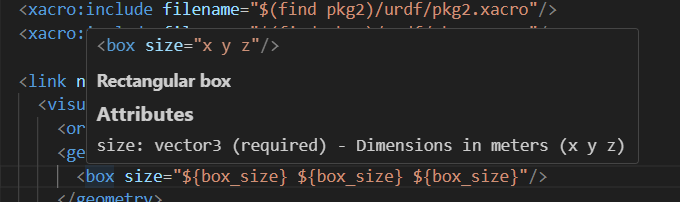

IntelliSense Features
The URDF Editor provides comprehensive IntelliSense support for URDF, Xacro, and OpenSCAD files, making navigation and editing faster and more intuitive.
Go to Definition (F12)
Press F12 or Ctrl+Click on any symbol to jump to its definition.
URDF/Xacro Navigation
Links
<link name="base_link">
<!-- F12 on "base_link" jumps here -->
<visual>...</visual>
</link>
<joint name="wheel_joint" type="revolute">
<parent link="base_link"/> <!-- F12 on "base_link" jumps to definition above -->
<child link="wheel_link"/>
</joint>
Joints
<joint name="arm_joint" type="revolute">
<!-- F12 on "arm_joint" jumps here -->
<parent link="base_link"/>
<child link="arm_link"/>
</joint>
<mimic joint="arm_joint" multiplier="1.0"/> <!-- F12 jumps to joint definition -->
Xacro Macros
<xacro:macro name="wheel" params="prefix radius">
<!-- F12 on "wheel" macro name jumps here -->
<link name="${prefix}_wheel">...</link>
</xacro:macro>
<xacro:wheel prefix="left" radius="0.1"/> <!-- F12 on "wheel" jumps to macro -->
Xacro Properties
<xacro:property name="wheel_radius" value="0.1"/>
<!-- F12 on property name jumps here -->
<cylinder radius="${wheel_radius}" length="0.05"/> <!-- F12 on property reference -->
File References
<!-- F12 opens the referenced file -->
<xacro:include filename="$(find robot_description)/urdf/common.xacro"/>
<mesh filename="package://robot_description/meshes/base.stl"/>
Package Resolution:
- Automatically resolves package:// URIs
- Searches workspace and configured package paths
- Falls back to ROS distro packages if not found locally
OpenSCAD Navigation
Modules
// F12 on "servo_mount" jumps here
module servo_mount(width, height, depth) {
difference() {
cube([width, height, depth]);
// mounting holes...
}
}
// F12 on "servo_mount" jumps to definition
servo_mount(40, 20, 10);
Functions
// F12 on "calculate_gear_ratio" jumps here
function calculate_gear_ratio(teeth_driver, teeth_driven) =
teeth_driven / teeth_driver;
// F12 on function call jumps to definition
ratio = calculate_gear_ratio(10, 40);
Cross-File Resolution
// In common.scad:
module rounded_box(size, radius) { ... }
// In robot_part.scad:
include <common.scad>
rounded_box([50, 30, 20], 2); // F12 jumps to common.scad
Include Resolution:
- Resolves include <> and use <> statements
- Searches current directory first
- Then checks configured library paths
- Works with workspace-relative paths
Hover Documentation
Hover over any element to see detailed documentation with parameters and types.
URDF/Xacro Elements
Hover over built-in elements like origin, link, joint, etc.:
<box size="${box_size} ${box_size} ${box_size}"/>
Hover shows:

Position and orientation (xyz in meters, rpy in radians)
Attributes
xyz: vector3 (default: "0 0 0") - Position in meters
rpy: vector3 (default: "0 0 0") - Orientation in radians
User-Defined Elements
For xacro macros and properties in your files:
<xacro:macro name="robot_arm" params="length radius">
<!-- Creates a robot arm segment -->
<link name="arm_segment">...</link>
</xacro:macro>
Hover shows: - Macro signature with all parameters - Documentation from preceding comments - Source file location if from included file
Xacro Property References
Hover over xacro property references to see their values:
<xacro:property name="box_color" value="0.8 0.2 0.2 1.0"/>
<xacro:property name="box_size" value="0.5"/>
<visual>
<geometry>
<box size="${box_size} ${box_size} ${box_size}"/>
</geometry>
<material name="box_material">
<color rgba="${box_color}"/> <!-- Hover shows value -->
</material>
</visual>
Hover on ${box_color} shows:
<xacro:property name="box_color" value="0.8 0.2 0.2 1.0"/>
Xacro Property
Value: 0.8 0.2 0.2 1.0
Features:
- Shows property definition with full XML syntax
- Displays the current value
- Works with properties defined in the same file
- Searches included files via <xacro:include> statements
- Supports $(find package_name) syntax for ROS packages
- Shows source file name when property is from an included file
- Handles property expressions like ${length/2} or ${width*2}
- Hover anywhere within the ${property_name} syntax
Example with included file:
<!-- In robot.xacro -->
<xacro:include filename="$(find my_robot)/urdf/common.xacro"/>
<link name="base">
<visual>
<material name="base_mat">
<!-- Hover shows: "Defined in: common.xacro" -->
<color rgba="${base_color}"/>
</material>
</visual>
</link>
OpenSCAD Documentation
Built-in Functions
Hover over built-in OpenSCAD functions:
cube([10, 20, 30]);
Hover shows:
cube(size=[x, y, z], center=false)
User-Defined Modules
Hover over your own modules:
// Creates a mounting bracket with holes
// width: total width in mm
// height: total height in mm
// hole_diameter: diameter of mounting holes
module mounting_bracket(width, height, hole_diameter=3) {
...
}
Hover shows:
module mounting_bracket(width, height, hole_diameter=3)
Creates a mounting bracket with holes - width: total width in mm - height: total height in mm - hole_diameter: diameter of mounting holes
From: c:\ws\project\libs\brackets.scad
Comment Extraction
The extension intelligently extracts documentation: - Reads comments directly above definitions - Filters out section headers (e.g., "==== UTILITY MODULES ====") - Ignores decorative comment lines - Preserves parameter descriptions
Code Completion
Trigger with Ctrl+Space or by typing trigger characters.
URDF/Xacro Completion
Elements
Type < to see available elements:
- <link> → Inserts link template with placeholders
- <joint> → Inserts joint with parent/child structure
- <origin> → Inserts origin with xyz and rpy attributes
Attributes
Start typing attribute names:
- xyz=" → Shows hint about format
- type=" → Lists joint types (revolute, continuous, prismatic, etc.)
Xacro Properties
Type ${ to see available properties in scope:
<xacro:property name="wheel_radius" value="0.1"/>
<xacro:property name="wheel_width" value="0.05"/>
<!-- Type ${ to see: wheel_radius, wheel_width -->
<cylinder radius="${wheel_radius}" length="${wheel_width}"/>
OpenSCAD Completion
Built-in Functions
Start typing function names:
- cube → Shows signature and description
- translate → Shows parameters and usage
- color → Shows color formats
User Variables
Properties defined in your file appear in completion:
wheel_radius = 50;
wheel_width = 20;
// Completion shows: wheel_radius, wheel_width
cylinder(r=wheel_rad... // <-- completion suggests wheel_radius
Context-Aware Features
Smart Detection
The extension uses context to determine what you're referencing:
<!-- Knows this is a link reference -->
<parent link="base_link"/>
<!-- Knows this is a joint reference -->
<mimic joint="arm_joint"/>
<!-- Knows this is a macro call -->
<xacro:wheel prefix="left"/>
<!-- Knows this is a property reference -->
<cylinder radius="${wheel_radius}"/>
<!-- Knows this is a file path -->
<mesh filename="package://robot/meshes/base.stl"/>
Workspace-Wide Search
When definitions aren't found in: 1. Current file 2. Directly included files 3. Package-resolved paths
The extension falls back to searching all relevant files in the workspace.
Tips and Tricks
Quick Navigation
- F12: Go to definition
- Alt+Left/Right: Navigate back/forward
- Ctrl+T: Go to symbol in workspace
- Ctrl+Shift+O: Go to symbol in file
Peek Definition
- Alt+F12: Peek definition in inline window
- Edit definitions without leaving context
Find All References
- Shift+F12: Find all references to symbol
- See everywhere a link, joint, or macro is used
Rename Symbol
- F2: Rename symbol across all files
- Works for links, joints, properties, and more
Multi-Cursor Editing
- Ctrl+D: Select next occurrence
- Ctrl+Shift+L: Select all occurrences
- Edit multiple locations simultaneously
Troubleshooting
Definition Not Found
Issue: F12 doesn't jump to definition
Solutions:
1. Check file is saved (definitions update on save)
2. Verify included files are in search paths
3. For packages, check urdf-editor.PackageSearchPaths setting
4. For OpenSCAD, check urdf-editor.OpenSCADLibraryPaths setting
Hover Shows No Documentation
Issue: Hover doesn't show property values from included files
Solutions:
1. Verify the <xacro:include> statement is correct
2. Check that package paths are resolvable (package.xml exists)
3. Open the "URDF Editor" output channel to see detailed tracing
4. Ensure files use correct $(find package_name) or relative path syntax
5. For large files (>10,000 lines), hover may be disabled for performance
Property Not Found in Included File
Issue: Property defined in included file doesn't show in hover
Solutions:
1. Verify the include file path is correct and file exists
2. Check the Output panel (View → Output → "URDF Editor") for resolution logs
3. Ensure property is defined before it's used (xacro processes top-to-bottom)
4. Try absolute or $(find package) paths instead of relative paths
Issue: Hover doesn't show documentation for custom elements
Solutions: 1. Add comments directly above definitions 2. Avoid decorative comments (===, ALL CAPS HEADERS) 3. Save file to update documentation cache 4. Check file is included/used in current file
Completion Not Working
Issue: Ctrl+Space shows no suggestions
Solutions:
1. Check cursor position (must be in appropriate context)
2. For Xacro properties, type ${ to trigger
3. For XML elements, type < to trigger
4. Verify file has correct extension (.urdf, .xacro, .scad)
Package Resolution Failed
Issue: package:// paths not resolving
Solutions:
1. Add package root to workspace folders
2. Configure urdf-editor.PackageSearchPaths
3. Check package.xml exists in package root
4. Verify package name in package.xml matches reference